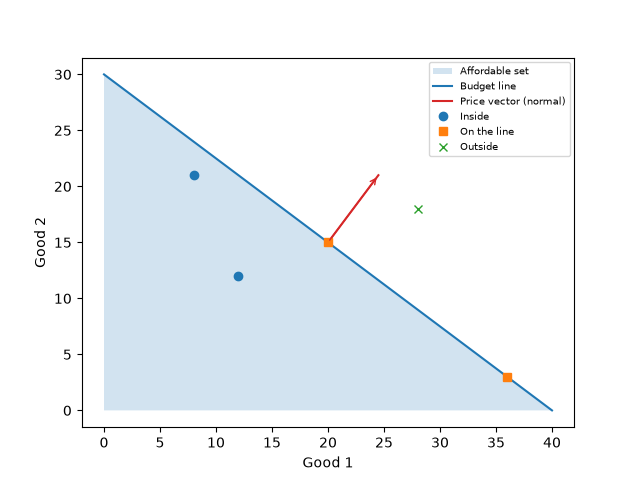
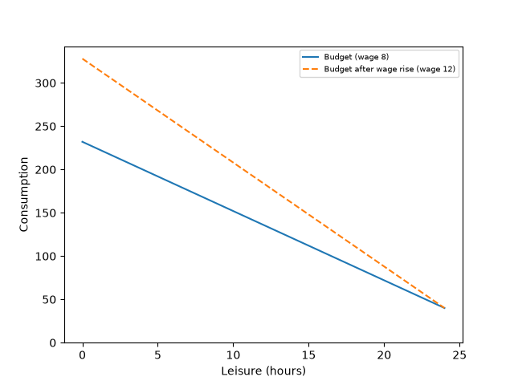

第 7 章: ベクトルと予算制約¶
7.1 この章の地図¶
所得 m で、2 つの財を買います。価格が p₁・p₂、数量が x₁・x₂ なら、支出は p₁x₁ + p₂x₂ です。財が 3 つ、10 個と増えても、「価格 × 数量を、財ごとに足す」形は変わりません。
この章の道具は、ベクトルと内積です。価格を並べた価格ベクトル p と、数量を並べた数量ベクトル x の内積 p·x が、支出です。予算制約は、財の数によらず、p·x ≤ m の 1 行で書けます。さらに、内積には図形の意味があります。価格ベクトルは、予算線と直交する向きを指します。

| 項目 | 内容 |
|---|---|
| 経済学の題材 | 予算制約、予算線と予算集合、労働と余暇、消費と貯蓄（2 期間）、証券の価格（発展） |
| 数学 | ベクトル、内積、大きさ、なす角、直交、直線の式と法線ベクトル、平均・分散の内積表示 |
| 使う Python の機能 | リスト、zip（strict=True）、sum、math.acos、math.isclose、Literal、テスト（pytest） |
| 新しく導入するライブラリ | NumPy を、正面から説明する（配列・np.dot・np.linalg.norm など。これまでは図のテストで、説明なしに使ってきた） |
| 完成形 | vector_dot、vector_length、vector_angle_degrees、mean_by_dot、variance_by_dot、line_normal_form、budget_expenditure、budget_status、budget_intercepts、budget_line_quantity、full_income、consumption_given_leisure、second_period_consumption、lifetime_income_present_value、security_price |
| ファイル | 実装: lib/chapter07/vectors.py（標準ライブラリ）、lib/chapter07/budget.py（NumPy）、lib/chapter07/plot.py（図）／テスト: test/chapter07/test_vectors.py、test/chapter07/test_budget.py、test/chapter07/test_plot.py |
| データ | なし（手計算できる小さな例だけ） |
数学の式とコードの対応¶
| 経済学・数学 | 式 | コード |
|---|---|---|
| 内積 | u·v = u₁v₁ + u₂v₂ + … + uₙvₙ | vector_dot(u, v) |
| 大きさ | |v| = √(v·v) | vector_length(v) |
| なす角 | cos θ = u·v ÷ (|u||v|) | vector_angle_degrees(u, v) |
| 平均・分散 | x·1 ÷ n、d·d ÷ n（d は偏差） | mean_by_dot(xs)、variance_by_dot(xs) |
| 直線の式 | n·x = c（n は法線ベクトル） | line_normal_form(p, q) |
| 支出 | p·x | budget_expenditure(prices, bundle) |
| 予算制約 | p·x ≤ m | budget_status(prices, bundle, income) |
| 予算線の切片 | m ÷ pᵢ | budget_intercepts(prices, income) |
| 予算線（2 財） | x₂ = (m − p₁x₁) ÷ p₂ | budget_line_quantity(prices, income, x1) |
| 労働と余暇 | c + w·l = w·T + 非労働所得 | full_income、consumption_given_leisure |
| 消費と貯蓄 | c₁ + c₂ ÷ (1 + r) = y₁ + y₂ ÷ (1 + r) | second_period_consumption、lifetime_income_present_value |
| 証券の価格（発展） | ペイオフ · 状態価格 | security_price(payoffs, state_prices) |
記号について: 太字や矢印の代わりに、ベクトルを p・x のような 1 文字で書きます。成分は p₁・p₂ のように添字で書きます。コードでは、ベクトルを Python のリスト（
[2, 3]）で表します。p·x の「·」は、内積です（数どうしの掛け算と区別します）。
前提とする章¶
| できること | 場所 |
|---|---|
関数とテストを書く、リストと zip を使う |
第 1 シリーズの第 1〜6 章 |
| 直線の式（傾きと切片）を書く | この連載の第 1 章 |
| 割引現在価値（将来のお金を、今のお金に換算する）を計算する | この連載の第 3 章 |
NumPy は、第 1〜6 章の図のテスト（np.asarray(...).tolist()）や、第 2・3・5・6 章の plot.py（np.linspace）で、説明なしに使ってきました。この章で、正面から説明します。第 1 シリーズの NumPy の章は、前提にしません。予算制約と最適な消費の経済学は、ミクロ経済学のためのプログラミング（初級）の第 2 章で扱います。この章は、そこで使う数学（ベクトルと内積）を、関数とテストで確かめます。
7.2 準備¶
cd apps/math-for-economics-programming/python
uv run pytest test/chapter07
59 passed
自分でコードを書くときは、practice/chapter07/ に、完成形と同じ名前のファイル（vectors.py・budget.py・plot.py・test_vectors.py・test_budget.py・test_plot.py）を作ります。図の節を後回しにするなら、plot.py と test_plot.py は要らず、テストは 48 件になります。テスト・plot.py・下の check スクリプトの import は、from practice.chapter07... に書き換えます（書き換えないと、完成形を動かすことになります）。
テストの import の一覧は、完成形の全関数です。まだ書いていない関数を import すると、ImportError になります。関数を 1 つ書くたびに、その名前を import に足してください。「予想の答え合わせ」のスクリプトは、practice/chapter07/check.py に保存し、uv run python -m practice.chapter07.check で実行します。
7.3 予想する¶
次の 5 つの問いに、紙で、手計算で答えてください。答えは、この節には書いてありません。「プログラミング」の節の「予想の答え合わせ」で確かめます。
- 価格が (2, 3)、所得が 60 です。財の組合せ (15, 10)・(10, 12)・(12, 13) は、それぞれ、予算線上・予算内・予算外のどれですか
- (1, 2) と (3, 4) の内積は、いくつですか。(1, 0) と (1, 1) のなす角は、何度ですか。(2, 3) と (3, −2) のなす角は、何度ですか
- データ 1・2・3・4・5 の平均と分散を、内積で求めてください（平均は、成分がすべて 1 のベクトルとの内積を 5 で割る。分散は、平均からの偏差のベクトルと、自分自身との内積を 5 で割る）
- 1 日 24 時間、時給 10 で、働いた分だけ稼げます（ほかの収入はありません）。24 時間すべて働いたときの所得は、いくつですか。余暇を 16 時間とると、消費に使えるお金は、いくつですか
- （発展）明日の状態が 2 つあり、ある証券は、状態 1 で 10、状態 2 で 20 を払います。状態 1 で 1 を払う権利の今の値段が 0.4、状態 2 で 1 を払う権利が 0.5 のとき、この証券の今の値段は、いくつですか。発展の節を飛ばす方は、この問いも、飛ばしてかまいません
7.4 ベクトルと予算制約の考え方¶
予算制約¶
所得 m で、価格 p₁ の財 1 を x₁、価格 p₂ の財 2 を x₂ 買います。支出が所得を超えない条件が、予算制約です。
p₁x₁ + p₂x₂ ≤ m
等号が成り立つ (x₁, x₂) の集まりが予算線、不等号を満たす組合せの集まりが予算集合です。予算線は、x₂ = (m − p₁x₁) ÷ p₂ と書くと、傾き −p₁ ÷ p₂ の直線です。財 1 だけを買えば m ÷ p₁、財 2 だけを買えば m ÷ p₂ で、これが予算線と軸の交点（切片）です。
ベクトルのいろいろ¶
数を順番に並べたものを、ベクトルと言います。並べた数の個数を、ベクトルの次元と言います。
| 見方 | 例 | 経済学の例 |
|---|---|---|
| 数ベクトル（数の並び） | (2, 3)、(1.5, 0.2, 8) | 価格ベクトル、数量ベクトル、データの並び |
| 幾何ベクトル（向きと長さを持つ矢印） | 原点から (2, 3) へ向かう矢印 | 価格ベクトルの向き（予算線と直交する） |
| 位置ベクトル（点の座標） | 点 (15, 10) | 財の組合せ（グラフ上の点） |
同じ (2, 3) を、数の並びとも、矢印とも、点とも読めます。この章は、3 つの見方を、場面ごとに使い分けます。
内積¶
同じ次元のベクトル u と v の内積は、成分ごとの積の和です。
u·v = u₁v₁ + u₂v₂ + … + uₙvₙ
支出 p₁x₁ + p₂x₂ は、価格ベクトル p と数量ベクトル x の内積 p·x です。財が n 個でも、予算制約は p·x ≤ m と書けます。次元が違うベクトルの内積は、決まりません。
内積には、図形の意味があります。ベクトルの大きさ（矢印の長さ）は、自分自身との内積の平方根 |v| = √(v·v) です（三平方の定理）。2 本のベクトルのなす角 θ は、
cos θ = u·v ÷ (|u||v|)
で決まります。内積が正なら鋭角、0 なら直角、負なら鈍角です。内積が 0 のとき、2 本のベクトルは直交すると言います。0 ベクトル（成分がすべて 0）は、向きがないので、なす角は決まりません。
直線の式と法線ベクトル¶
直線は、「ある向き n との内積が一定の点の集まり」とも書けます。
n·x = c
このとき、n は、直線と直交します。直線上の 2 点 x と y では n·x = n·y = c なので、差 y − x（直線の向き）と n の内積は、0 になるからです。直線と直交するベクトル n を、直線の法線ベクトルと言います。
予算線 p·x = m では、価格ベクトル p が、法線ベクトルです。予算線上を動くと（財 1 を減らして、財 2 を増やす）、その動き Δx は、p と直交します（p·Δx = 0。支出は変わらない）。p の向きに動くと、支出が最も速く増えます。
1 次関数との関係も見ておきます。y = a·x + b は、−a·x + y = b と書き直すと、法線ベクトル (−a, 1) の直線です。財が 3 つなら、p₁x₁ + p₂x₂ + p₃x₃ = m は、3 次元の空間の平面で、その法線ベクトルも p です。
平均と分散を、内積で表す¶
データ x = (x₁, …, xₙ) の和は、成分がすべて 1 のベクトル 1 = (1, …, 1) との内積 x·1 です。
平均 = x·1 ÷ n、分散 = d·d ÷ n（d = (x₁ − 平均, …, xₙ − 平均) は、偏差のベクトル）
分散は、偏差のベクトルの大きさの 2 乗を n で割ったものです。標準偏差は、その平方根で、「偏差のベクトルの長さ ÷ √n」です。この見方は、第 9 章の回帰で、もう一度使います。
もう少し練習: 労働と余暇¶
1 日 T 時間のうち、l 時間を余暇にとり、残りの T − l 時間を、時給 w で働きます。非労働所得（仕送り・利子など）を N とすると、消費 c は、
c = w·(T − l) + N、書き直すと c + w·l = w·T + N
です。右辺 w·T + N は、全部の時間を働いたときの所得（完全所得）です。左辺は、価格ベクトル (1, w) と、(c, l) の内積です。余暇の価格は、賃金です（1 時間休むと、1 時間分の賃金をあきらめる）。賃金が上がると、予算線は、余暇 T 時間の点（c = N）を中心に、急になります（7.5 節の図）。
もう少し練習: 消費と貯蓄¶
今期の所得 y₁、来期の所得 y₂、利子率 r の 2 期間で、今期 c₁ 消費します。残り y₁ − c₁ を貯蓄すると、来期は利子が付いて (y₁ − c₁)(1 + r) になります（c₁ > y₁ なら、借りて、利子付きで返します）。
c₂ = (y₁ − c₁)(1 + r) + y₂、書き直すと c₁ + c₂ ÷ (1 + r) = y₁ + y₂ ÷ (1 + r)
右辺は、所得の割引現在価値（第 3 章）です。左辺は、価格ベクトル (1, 1 ÷ (1 + r)) と (c₁, c₂) の内積です。来期の消費の価格は、1 ÷ (1 + r)（今の 1 ÷ (1 + r) を貯蓄すれば、来期の 1 になる）です。
発展: 証券の価格
明日の世界が、いくつかの状態（好況・不況など）のどれかになるとします。証券は、状態ごとに違う額を払います。その額を並べたものが、ペイオフのベクトルです。「状態 s で 1 を払い、ほかの状態では何も払わない権利」の今の値段を、状態 s の状態価格と言います。
ペイオフ (a₁, a₂) の証券は、状態 1 の権利を a₁ 個と、状態 2 の権利を a₂ 個、まとめたものと同じです。したがって、その値段は、
証券の価格 = a₁q₁ + a₂q₂ = ペイオフ · 状態価格
で、内積です。予算制約の「価格 · 数量」と同じ形です。どの状態でも 1 を払う証券（安全資産）の価格は、状態価格の和で、その逆数が 1 + 利子率です。
7.5 プログラミング¶
Red: 内積のテスト¶
test_vectors.py の先頭の import です。
import math
import numpy as np
import pytest
from lib.chapter07.vectors import (
line_normal_form,
mean_by_dot,
variance_by_dot,
vector_angle_degrees,
vector_dot,
vector_length,
)
最初のテストは、手計算できる内積 1×3 + 2×4 = 11 と、3 財の例（2×10 + 3×4 + 0.5×6 = 35）です。長さが違うときは、エラーにします。
def test_1と2と3と4の内積は11() -> None:
assert vector_dot([1, 2], [3, 4]) == 11
def test_3財のベクトルの内積は成分ごとの積の和() -> None:
assert vector_dot([2, 3, 0.5], [10, 4, 6]) == pytest.approx(35)
def test_長さの違うベクトルの内積は決まらない() -> None:
with pytest.raises(ValueError):
vector_dot([1, 2, 3], [1, 2])
vectors.py がないので、収集の時点で失敗します（Red）。
Green: 内積を、リストで実装する¶
import math
from collections.abc import Sequence
def vector_dot(u: Sequence[float], v: Sequence[float]) -> float:
"""内積 u·v = u₁v₁ + u₂v₂ + … + uₙvₙ。長さが違えば ValueError（zip の strict）。"""
return sum(a * b for a, b in zip(u, v, strict=True))
zip で成分を組にして、積を足します。strict=True を付けると、長さが違うとき zip が ValueError を出します（自分で書いた長さの検査は、重複するので消しました）。
大きさとなす角¶
def test_ベクトルの大きさは自分との内積の平方根() -> None:
assert vector_length([3, 4]) == 5
assert vector_length([1, 2, 2]) == 3
def test_1と0と1と1のなす角は45度() -> None:
assert vector_angle_degrees([1, 0], [1, 1]) == pytest.approx(45)
def test_内積が0のベクトルは直交する() -> None:
assert vector_dot([2, 3], [3, -2]) == 0
assert vector_angle_degrees([2, 3], [3, -2]) == pytest.approx(90)
assert vector_angle_degrees([1, 0, 0], [0, 0, 5]) == pytest.approx(90)
def test_丸め誤差でcosが1を超えても角は0度() -> None:
# 0.1 は 2 進数で割り切れず、cos θ が 1.0000000000000002 になる
assert vector_angle_degrees([0.1, 1], [0.2, 2]) == pytest.approx(0, abs=1e-5)
assert vector_angle_degrees([0.1, 1], [-0.2, -2]) == pytest.approx(180, abs=1e-5)
def vector_length(v: Sequence[float]) -> float:
"""大きさ |v| = √(v·v)。"""
return math.sqrt(vector_dot(v, v))
def vector_angle_degrees(u: Sequence[float], v: Sequence[float]) -> float:
"""2 本のベクトルのなす角（度）。cos θ = u·v ÷ (|u||v|)。"""
lengths = vector_length(u) * vector_length(v)
if lengths == 0:
raise ValueError("0 ベクトルとのなす角は、決まりません")
cosine = vector_dot(u, v) / lengths
# 丸め誤差で ±1 をわずかに超えると、acos が ValueError を出すので、範囲に収める
return math.degrees(math.acos(max(-1.0, min(1.0, cosine))))
最初は math.acos(vector_dot(u, v) / lengths) と素直に書き、2 つの問題が出ました。
- (0.1, 1) と (0.2, 2)（同じ向き）では、cos θ が 1.0000000000000002 になり、
acosがValueError（math domain error）を出しました。0.1 が 2 進数で割り切れないためです。cos θ を [−1, 1] に収めて直しました - (1, 2) と (2, 4) の角は、0 でなく 1.2e-6 度になりました。cos θ = 1 の近くでは、
acosが cos の丸め誤差を大きく拡大します。0 度・180 度のテストは、許容誤差をabs=1e-5にしています（境界のテスト）
平均と分散を、内積で¶
def test_5つの値の平均3は1のベクトルとの内積を5で割る() -> None:
assert mean_by_dot([1, 2, 3, 4, 5]) == 3
def test_5つの値の分散2は偏差の内積を5で割る() -> None:
assert variance_by_dot([1, 2, 3, 4, 5]) == 2
def mean_by_dot(xs: Sequence[float]) -> float:
"""平均 = x·1 ÷ n（1 は、成分がすべて 1 のベクトル）。"""
if not xs:
raise ValueError("空のデータの平均は、決まりません")
return vector_dot(xs, [1] * len(xs)) / len(xs)
def variance_by_dot(xs: Sequence[float]) -> float:
"""分散 = d·d ÷ n（d は、平均からの偏差のベクトル）。"""
mean = mean_by_dot(xs)
deviations = [x - mean for x in xs]
return vector_dot(deviations, deviations) / len(xs)
NumPy を導入する¶
ここまでの vectors.py は、標準ライブラリ（リストと zip）だけで書き、内積の仕組みを自分で確かめました。仕組みがわかったので、ここから先（budget.py）は、道具の NumPy を使います。
NumPy は、数の並び（配列）の計算を、まとめて行うライブラリです。第 1〜6 章の図のテストと、第 2・3・5・6 章の plot.py で、説明なしに import numpy as np と書いてきた np が、これです。pyproject.toml の依存に入っていて、uv sync で入るので、uv add は要りません。この章で使う道具は、次のとおりです。
| 道具 | 意味 |
|---|---|
np.array(リスト, dtype=np.float64) |
リストを、浮動小数点数（float64）の配列にする |
np.asarray(値, dtype=np.float64) |
np.array と同じ。ただし、すでに同じ型の配列なら、コピーせずにそのまま返す |
np.dot(u, v) |
内積（自作の vector_dot）。リストをそのまま渡しても、内部で配列に変換される |
np.linalg.norm(v) |
大きさ（自作の vector_length） |
np.mean・np.var・np.std |
平均・分散・標準偏差。np.var は n で割る分散（statistics.variance は n − 1 で割るので、値が違う） |
u * v、.sum() |
配列どうしの * は成分ごとの積（内積ではない）。.sum() は成分の和 |
60 / 配列、配列 <= 0 |
数と配列の計算・比較は、成分ごとに行われる（ブロードキャスト） |
np.any(配列 <= 0) |
「どれか 1 つでも 0 以下か」 |
.tolist() |
配列を、Python のリストに戻す |
NDArray[np.float64] |
「float64 の配列」という型ヒント（from numpy.typing import NDArray） |
NumPy の計算結果の数は、Python の float でなく np.float64 です（配列を for で回して取り出した成分も同じ）。値は同じですが型が違うので、この連載では、公開する関数の戻り値を float(...) で float に変換します（型ヒントと mypy をそろえるため）。
自作の関数と NumPy の関数が一致することを、テストにします（0 < x < 1 の成分・負の成分・0 ベクトル・4 次元も試す）。2 つの計算を突き合わせる考え方は、第 4 章の「公式と、項を足した値の一致」と同じです。
def test_自作の内積と大きさはNumPyと一致する() -> None:
pairs: list[tuple[list[float], list[float]]] = [
([1, 2], [3, 4]),
([2, 3, 0.5], [10, 4, 6]),
([0.1, -0.7, 0.3, 2], [-5, 0.25, 4, 0]),
([0, 0, 0], [1, 2, 3]),
]
for u, v in pairs:
assert vector_dot(u, v) == pytest.approx(float(np.dot(u, v)))
assert vector_length(u) == pytest.approx(float(np.linalg.norm(u)))
def test_NumPyの配列の掛け算は成分ごとで内積は和をとる() -> None:
u = np.array([1, 2, 3], dtype=np.float64)
v = np.array([4, 5, 6], dtype=np.float64)
assert (u * v).tolist() == [4, 10, 18]
assert float(np.dot(u, v)) == float((u * v).sum()) == 32
def test_内積の平均と分散は統計の公式と一致する() -> None:
for xs in ([1, 2, 3, 4, 5], [2.5, -1, 0.3, 8], [10, 10, 10], [0.2, 0.9]):
assert mean_by_dot(xs) == pytest.approx(float(np.mean(xs)))
assert variance_by_dot(xs) == pytest.approx(float(np.var(xs)))
assert math.sqrt(variance_by_dot(xs)) == pytest.approx(float(np.std(xs)))
この 3 つは、新しい関数なしで最初から通ります（NumPy の使い方を確かめるテストです）。
Red: 支出と予算制約のテスト¶
test_budget.py の先頭の import です。
import pytest
from lib.chapter07.budget import (
budget_expenditure,
budget_intercepts,
budget_line_quantity,
budget_status,
consumption_given_leisure,
full_income,
lifetime_income_present_value,
second_period_consumption,
security_price,
)
from lib.chapter07.vectors import vector_dot
def test_価格2と3で15と10を買う支出は60() -> None:
assert budget_expenditure([2, 3], [15, 10]) == 60
def test_予算線上と予算内と予算外() -> None:
assert budget_status([2, 3], [15, 10], 60) == "on"
assert budget_status([2, 3], [10, 12], 60) == "inside"
assert budget_status([2, 3], [12, 13], 60) == "outside"
def test_丸め誤差があっても予算線上と判定する() -> None:
# 0.1 × 1 + 0.2 × 1 は、浮動小数点では 0.30000000000000004
assert budget_status([0.1, 0.2], [1, 1], 0.3) == "on"
Green: 予算制約を、NumPy で実装する¶
budget.py では、NumPy を使います。
import math
from collections.abc import Sequence
from typing import Literal
import numpy as np
from numpy.typing import NDArray
def _as_vector(values: Sequence[float]) -> NDArray[np.float64]:
"""リストを、浮動小数点数の NumPy の配列にする。"""
return np.asarray(values, dtype=np.float64)
def _require_positive_prices(prices: Sequence[float]) -> None:
"""価格は、すべて正でなければならない。"""
if np.any(_as_vector(prices) <= 0):
raise ValueError("価格は、すべて正でなければなりません")
def budget_expenditure(prices: Sequence[float], bundle: Sequence[float]) -> float:
"""支出 p·x（価格ベクトルと数量ベクトルの内積）。"""
return float(np.dot(_as_vector(prices), _as_vector(bundle)))
def budget_status(
prices: Sequence[float], bundle: Sequence[float], income: float
) -> Literal["inside", "on", "outside"]:
"""財の組合せが、予算線上（p·x = m）・予算内（<）・予算外（>）のどれか。"""
_require_positive_prices(prices)
if np.any(_as_vector(bundle) < 0):
raise ValueError("数量は 0 以上でなければなりません")
spending = budget_expenditure(prices, bundle)
# 0.1 + 0.2 = 0.30000000000000004 のような丸め誤差を、予算線上とみなす
if math.isclose(spending, income):
return "on"
return "inside" if spending < income else "outside"
_as_vectorは、リストをdtype=np.float64（浮動小数点数）の配列にします。[2, 3]のような整数のリストから作ると、dtypeがint64の配列になります。dtypeを指定して、型ヒントをNDArray[np.float64]の 1 つにそろえますnp.any(配列 <= 0)は、「どれか 1 つでも 0 以下か」を、まとめて調べます。budget_intercepts（次の節）のincome / 配列も、成分ごとの割り算です- 予算線上かどうかは、
==でなく、math.iscloseで比べます。0.1 × 1 + 0.2 × 1 は、浮動小数点では 0.30000000000000004 で、==では所得 0.3 と等しくなりません。==で書いて、このテストが落ちることを確かめてから、直しました - 戻り値の型
Literal["inside", "on", "outside"]は、「この 3 つの文字列のどれか」という意味です
予算線と法線ベクトル¶
予算線上の 2 点の差が、価格ベクトルと直交すること（価格ベクトルが法線ベクトルであること）を、テストにします。2 点を通る直線を n·x = c の形にする line_normal_form は、vectors.py に置きます（予算に限らない、直線の数学なので）。
def test_予算線の切片は所得を各財の価格で割る() -> None:
assert budget_intercepts([2, 3], 60) == [30, 20]
assert budget_intercepts([1, 2, 5], 30) == [30, 15, 6]
def test_予算線上の2点の差は価格ベクトルと直交する() -> None:
# 価格ベクトルは、予算線の法線ベクトル
for prices, income, x1, x2 in [([2, 3], 60, 3, 21), ([4, 5], 100, 1, 24.5)]:
y1 = budget_line_quantity(prices, income, x1)
y2 = budget_line_quantity(prices, income, x2)
assert vector_dot(prices, [x2 - x1, y2 - y1]) == pytest.approx(0)
def test_2点を通る直線の法線ベクトルと定数() -> None:
assert line_normal_form([30, 0], [0, 20]) == ([20, 30], 600)
def budget_intercepts(prices: Sequence[float], income: float) -> list[float]:
"""所得をすべて 1 つの財に使ったときの数量 m ÷ pᵢ（予算線と各軸の交点）。"""
_require_positive_prices(prices)
return [float(q) for q in income / _as_vector(prices)]
def budget_line_quantity(
prices: Sequence[float], income: float, first_quantity: float
) -> float:
"""2 財の予算線 p₁x₁ + p₂x₂ = m の上で、財 1 が first_quantity のときの財 2。"""
if len(prices) != 2:
raise ValueError("予算線の式は、2 財のときだけ使います")
_require_positive_prices(prices)
second_quantity = (income - prices[0] * first_quantity) / prices[1]
if first_quantity < 0 or second_quantity < 0:
raise ValueError("予算線上で、数量が負になる点はありません")
return second_quantity
def line_normal_form(
p: Sequence[float], q: Sequence[float]
) -> tuple[list[float], float]:
"""2 点 p・q を通る直線を、n·x = c（n は法線ベクトル）の形で表す。"""
direction = [q[0] - p[0], q[1] - p[1]]
if direction == [0, 0]:
raise ValueError("同じ 2 点では、直線が決まりません")
normal = [direction[1], -direction[0]]
return normal, vector_dot(normal, p)
2 点 (30, 0)・(0, 20) は、価格 (2, 3)・所得 60 の予算線の切片です。line_normal_form は、法線ベクトル (20, 30) を返します。これは、価格ベクトル (2, 3) の 10 倍で、同じ向きです。法線ベクトルは、向きだけが決まり、長さは決まりません。
労働と余暇¶
def test_24時間で賃金10なら消費と余暇の予算は240() -> None:
assert full_income(10, 24) == 240
assert full_income(8, 24, 40) == 232
def test_余暇16時間なら8時間働いて消費は80() -> None:
assert consumption_given_leisure(16, 10, 24) == 80
assert consumption_given_leisure(24, 10, 24, 50) == 50
assert consumption_given_leisure(0, 8, 24, 40) == 232
def test_消費と余暇は価格1と賃金の予算線上にある() -> None:
# 余暇の価格は賃金（1 時間休むと、賃金を 1 時間分あきらめる）
for leisure, wage, nonlabor in [(16, 10, 0), (10, 12.5, 30), (20.5, 8, 40)]:
c = consumption_given_leisure(leisure, wage, 24, nonlabor)
assert budget_expenditure([1, wage], [c, leisure]) == pytest.approx(
full_income(wage, 24, nonlabor)
)
def full_income(wage: float, total_hours: float, nonlabor_income: float = 0) -> float:
"""すべての時間を働いたときの所得 w·T + 非労働所得（消費と余暇の予算）。"""
return wage * total_hours + nonlabor_income
def consumption_given_leisure(
leisure: float, wage: float, total_hours: float, nonlabor_income: float = 0
) -> float:
"""余暇 l のときの消費 c = w·(T − l) + 非労働所得。"""
if not 0 <= leisure <= total_hours:
raise ValueError("余暇は、0 時間以上、総時間以下でなければなりません")
return wage * (total_hours - leisure) + nonlabor_income
3 つ目のテストは、労働と余暇が、価格 (1, w) の予算制約と同じであることを、この章の budget_expenditure で確かめます。
消費と貯蓄¶
def test_2期間の予算で今期100のうち60を消費すると来期は利子付きで() -> None:
assert second_period_consumption(60, 100, 0, 0.05) == pytest.approx(42)
assert second_period_consumption(60, 100, 50, 0.1) == pytest.approx(94)
def test_2期間の消費は価格1と1割る1プラスrの予算線上にある() -> None:
for c1, y1, y2, rate in [(60, 100, 50, 0.1), (120, 100, 50, 0.1), (30, 80, 20, 0)]:
c2 = second_period_consumption(c1, y1, y2, rate)
assert budget_expenditure([1, 1 / (1 + rate)], [c1, c2]) == pytest.approx(
lifetime_income_present_value(y1, y2, rate)
)
def _require_rate(rate: float) -> None:
"""利子率が −100% 以下では、割り引けない。"""
if rate <= -1:
raise ValueError("利子率が −100% 以下では、割り引けません")
def second_period_consumption(
first_consumption: float, income1: float, income2: float, rate: float
) -> float:
"""2 期間の予算で、今期 c₁ 消費したときの来期の消費 (y₁ − c₁)(1 + r) + y₂。"""
_require_rate(rate)
second = (income1 - first_consumption) * (1 + rate) + income2
if second < 0:
raise ValueError("来期に返せないほど、今期に借りることはできません")
return second
def lifetime_income_present_value(income1: float, income2: float, rate: float) -> float:
"""2 期間の所得の現在価値 y₁ + y₂ ÷ (1 + r)。"""
_require_rate(rate)
return income1 + income2 / (1 + rate)
来期に返せないほど借りると（c₂ < 0）、エラーにします。境界のテストの利子率は 25% です。10% だと、ちょうど返し切る点が浮動小数点で −7.1e-15 になり、「ちょうど 0」を試せないからです（1.25 は 2 進数で割り切れます）。
発展: 証券の価格¶
証券の価格のテストと実装（発展。後回しにしても、学習は成り立ちます）
def test_ペイオフ10と20で状態価格0点4と0点5の証券の価格は14() -> None:
assert security_price([10, 20], [0.4, 0.5]) == pytest.approx(14)
def test_どの状態でも1を払う安全な証券の価格から利子率がわかる() -> None:
price = security_price([1, 1, 1], [0.3, 0.45, 0.2])
assert price == pytest.approx(0.95)
assert 1 / price - 1 == pytest.approx(0.05263, abs=1e-5)
def test_負の状態価格では証券の価格は決まらない() -> None:
with pytest.raises(ValueError):
security_price([10, 20], [0.4, -0.1])
assert security_price([10, 20], [0, 0.5]) == 10
def security_price(payoffs: Sequence[float], state_prices: Sequence[float]) -> float:
"""証券の価格 = ペイオフのベクトルと状態価格のベクトルの内積。"""
if np.any(_as_vector(state_prices) < 0):
raise ValueError("状態価格は 0 以上でなければなりません")
return float(np.dot(_as_vector(payoffs), _as_vector(state_prices)))
安全資産の価格 0.3 + 0.45 + 0.2 = 0.95 から、利子率は 1 ÷ 0.95 − 1 ≈ 5.26% です。
予想の答え合わせ¶
from lib.chapter07.budget import (
budget_status,
consumption_given_leisure,
full_income,
security_price,
)
from lib.chapter07.vectors import (
mean_by_dot,
variance_by_dot,
vector_angle_degrees,
vector_dot,
)
print([budget_status([2, 3], b, 60) for b in ([15, 10], [10, 12], [12, 13])])
print(vector_dot([1, 2], [3, 4]), round(vector_angle_degrees([1, 0], [1, 1]), 6))
print(vector_dot([2, 3], [3, -2]), round(vector_angle_degrees([2, 3], [3, -2]), 6))
print(mean_by_dot([1, 2, 3, 4, 5]), variance_by_dot([1, 2, 3, 4, 5]))
print(full_income(10, 24), consumption_given_leisure(16, 10, 24))
print(round(security_price([10, 20], [0.4, 0.5]), 6))
['on', 'inside', 'outside']
11 45.0
0 90.0
3.0 2.0
240 80
14.0
- 1 つ目の問い: 支出は 2×15 + 3×10 = 60（予算線上）、2×10 + 3×12 = 56（予算内）、2×12 + 3×13 = 63（予算外）です
- 2 つ目の問い: 内積は 11 です。(1, 0) と (1, 1) は 45 度です。(2, 3) と (3, −2) は、内積が 2×3 + 3×(−2) = 0 なので、直交（90 度）します。(3, −2) は、価格 (2, 3) の予算線に沿った向きです
- 3 つ目の問い: 平均は (1 + 2 + 3 + 4 + 5) ÷ 5 = 3、偏差は (−2, −1, 0, 1, 2) で、自分との内積 4 + 1 + 0 + 1 + 4 = 10 を 5 で割って、分散は 2 です
- 4 つ目の問い: 完全所得は 10 × 24 = 240、余暇 16 時間なら 8 時間働いて、消費は 80 です
- 5 つ目の問い（発展）: 10 × 0.4 + 20 × 0.5 = 14 です
角度は、round(..., 6) で丸めて表示しています。0 度・180 度の近くと同じく、acos の丸め誤差が、末尾の桁に出ることがあるからです。
境界のテスト¶
完成形には、本文に載せなかったテストがあります。同じ向きの角・直線上の点・借りる場合・生涯所得の例と、境界（0 ベクトル、空のデータ、値が 1 つ、縦・横の直線、同じ 2 点、3 財、長さの違い、負の数量・正でない価格、数量 0、切片を超える量、余暇が 0〜T の外、利子率 −100% 以下、借りすぎ）です。テストの件数を合わせるため、ここに全件載せます。
境界のテスト
def test_同じ向きは0度で逆向きは180度() -> None:
# 0 度・180 度の近くでは、acos が丸め誤差を拡大する（cos の誤差 1e-16 が、1e-6 度に）
assert vector_angle_degrees([1, 2], [2, 4]) == pytest.approx(0, abs=1e-5)
assert vector_angle_degrees([1, 2], [-3, -6]) == pytest.approx(180, abs=1e-5)
def test_直線上の点は法線ベクトルとの内積が定数() -> None:
pairs: list[tuple[list[float], list[float]]] = [
([30, 0], [0, 20]),
([1, 5], [4, -1]),
([0.5, 0.5], [2, 3.5]),
]
for p, q in pairs:
normal, constant = line_normal_form(p, q)
middle = [(a + b) / 2 for a, b in zip(p, q, strict=True)]
for point in (p, q, middle):
assert vector_dot(normal, point) == pytest.approx(constant)
direction = [b - a for a, b in zip(p, q, strict=True)]
assert vector_dot(normal, direction) == pytest.approx(0)
def test_0ベクトルとのなす角は決まらない() -> None:
with pytest.raises(ValueError):
vector_angle_degrees([0, 0], [1, 1])
with pytest.raises(ValueError):
vector_angle_degrees([1, 1], [0, 0])
def test_空のデータの平均と分散は決まらない() -> None:
with pytest.raises(ValueError):
mean_by_dot([])
with pytest.raises(ValueError):
variance_by_dot([])
def test_1つだけの値の平均はその値で分散は0() -> None:
assert mean_by_dot([7]) == 7
assert variance_by_dot([7]) == 0
def test_縦の直線と横の直線の法線ベクトル() -> None:
assert line_normal_form([5, 0], [5, 10]) == ([10, 0], 50)
assert line_normal_form([0, 2], [4, 2]) == ([0, -4], -8)
def test_同じ2点では直線が決まらない() -> None:
with pytest.raises(ValueError):
line_normal_form([1, 2], [1, 2])
def test_支出は価格ベクトルと数量ベクトルの内積() -> None:
pairs: list[tuple[list[float], list[float]]] = [
([2, 3], [4, 7]),
([1.5, 0.2, 8], [2, 10, 0.5]),
]
for prices, bundle in pairs:
assert budget_expenditure(prices, bundle) == pytest.approx(
vector_dot(prices, bundle)
)
def test_支出は浮動小数点の数を返す() -> None:
assert type(budget_expenditure([2, 3], [15, 10])) is float
def test_予算線上の財2の数量() -> None:
assert budget_line_quantity([2, 3], 60, 15) == 10
assert budget_line_quantity([2, 3], 60, 0) == 20
assert budget_line_quantity([4, 5], 100, 10) == 12
def test_今期に借りると来期の消費は利子の分だけ減る() -> None:
assert second_period_consumption(120, 100, 50, 0.1) == pytest.approx(28)
def test_生涯所得の現在価値は来期の所得を割り引いて足す() -> None:
assert lifetime_income_present_value(100, 110, 0.1) == pytest.approx(200)
assert lifetime_income_present_value(100, 0, 0.05) == 100
def test_3財の予算の判定() -> None:
assert budget_status([1, 2, 5], [10, 5, 2], 30) == "on"
assert budget_status([1, 2, 5], [10, 5, 2.1], 30) == "outside"
def test_長さの違う価格と数量の支出は決まらない() -> None:
with pytest.raises(ValueError):
budget_expenditure([2, 3], [1, 2, 3])
def test_負の数量や正でない価格では予算を判定しない() -> None:
with pytest.raises(ValueError):
budget_status([2, 3], [-1, 5], 60)
with pytest.raises(ValueError):
budget_status([2, 0], [1, 5], 60)
with pytest.raises(ValueError):
budget_status([-2, 3], [1, 5], 60)
def test_数量0の組合せは所得が正なら予算内で0なら予算線上() -> None:
assert budget_status([2, 3], [0, 0], 60) == "inside"
assert budget_status([2, 3], [0, 0], 0) == "on"
def test_正でない価格では切片も予算線も決まらない() -> None:
with pytest.raises(ValueError):
budget_intercepts([2, 0], 60)
with pytest.raises(ValueError):
budget_line_quantity([0, 3], 60, 5)
with pytest.raises(ValueError):
budget_line_quantity([2, -3], 60, 5)
def test_財1を切片より多く買うと財2の数量は負になるので決まらない() -> None:
assert budget_line_quantity([2, 3], 60, 30) == 0
with pytest.raises(ValueError):
budget_line_quantity([2, 3], 60, 30.5)
with pytest.raises(ValueError):
budget_line_quantity([2, 3], 60, -1)
def test_予算線上の数量は2財のときだけ() -> None:
with pytest.raises(ValueError):
budget_line_quantity([1, 2, 5], 30, 4)
def test_余暇は0時間以上で総時間以下() -> None:
assert consumption_given_leisure(24, 10, 24) == 0
with pytest.raises(ValueError):
consumption_given_leisure(-1, 10, 24)
with pytest.raises(ValueError):
consumption_given_leisure(24.5, 10, 24)
def test_利子率がマイナス100パーセント以下なら2期間の予算は決まらない() -> None:
with pytest.raises(ValueError):
second_period_consumption(60, 100, 0, -1)
with pytest.raises(ValueError):
lifetime_income_present_value(100, 50, -1.5)
assert second_period_consumption(60, 100, 0, -0.5) == pytest.approx(20)
def test_来期に返せないほど借りると来期の消費は決まらない() -> None:
# 40 借りると、来期に 40 × 1.25 = 50 返す。来期の所得 50 で、ちょうど返し切る
assert second_period_consumption(140, 100, 50, 0.25) == 0
with pytest.raises(ValueError):
second_period_consumption(141, 100, 50, 0.25)
図¶
図には、次の import が要ります。
from collections.abc import Sequence
import matplotlib.pyplot as plt
from matplotlib.axes import Axes
from matplotlib.figure import Figure
from lib.chapter07.budget import (
budget_intercepts,
budget_status,
consumption_given_leisure,
)
from lib.chapter07.vectors import vector_length
章の冒頭の図（予算線・予算集合・価格ベクトル）と、労働と余暇の予算線の図を描きます。テストでは、価格ベクトルの矢印が予算線と直交すること（内積 0）、点が予算内・予算線上・予算外に正しく分かれること、予算集合が原点と 2 つの切片の三角形であることを、確かめます。

描画のテストと実装（後回しにしても、学習は成り立ちます）
テストの import:
import matplotlib.pyplot as plt
import numpy as np
import pytest
from matplotlib.axes import Axes
from lib.chapter07.budget import budget_intercepts, consumption_given_leisure
from lib.chapter07.plot import plot_budget_set, plot_labor_leisure
from lib.chapter07.vectors import vector_angle_degrees, vector_dot, vector_length
def _series(ax: Axes, label: str) -> tuple[list[float], list[float]]:
line = next(x for x in ax.lines if x.get_label() == label)
xs = np.asarray(line.get_xdata(), dtype=float).tolist()
ys = np.asarray(line.get_ydata(), dtype=float).tolist()
return xs, ys
def test_予算線は2つの切片を結ぶ() -> None:
ax = plot_budget_set([3, 4], 120, []).axes[0]
xs, ys = _series(ax, "Budget line")
assert xs == pytest.approx([0, 40])
assert ys == pytest.approx([30, 0])
assert budget_intercepts([3, 4], 120) == [40, 30]
def test_価格ベクトルの矢印は予算線と直交し価格と同じ向き() -> None:
prices = [3, 4]
ax = plot_budget_set(prices, 120, []).axes[0]
xs, ys = _series(ax, "Price vector (normal)")
arrow = [xs[1] - xs[0], ys[1] - ys[0]]
assert vector_dot(arrow, [40, -30]) == pytest.approx(0)
assert vector_angle_degrees(arrow, prices) == pytest.approx(0, abs=1e-5)
# 矢印は、予算線の中点から出る
assert (xs[0], ys[0]) == pytest.approx((20, 15))
def test_価格ベクトルの矢印の長さは小さい切片の4分の1() -> None:
xs, ys = _series(plot_budget_set([3, 4], 120, []).axes[0], "Price vector (normal)")
assert vector_length([xs[1] - xs[0], ys[1] - ys[0]]) == pytest.approx(30 / 4)
xs, ys = _series(plot_budget_set([2, 3], 60, []).axes[0], "Price vector (normal)")
assert vector_length([xs[1] - xs[0], ys[1] - ys[0]]) == pytest.approx(20 / 4)
def test_財の組合せは予算内と予算線上と予算外に分けて描く() -> None:
bundles = [[12, 12], [20, 15], [28, 18], [4, 3]]
ax = plot_budget_set([3, 4], 120, bundles).axes[0]
assert _series(ax, "Inside") == ([12, 4], [12, 3])
assert _series(ax, "On the line") == ([20], [15])
assert _series(ax, "Outside") == ([28], [18])
def test_組合せがない分類は凡例に載せない() -> None:
ax = plot_budget_set([3, 4], 120, [[1, 1]]).axes[0]
labels = {x.get_label() for x in ax.lines}
assert "Inside" in labels
assert not {"On the line", "Outside"} & labels
def test_予算内の領域は予算線の下を塗る() -> None:
ax = plot_budget_set([2, 3], 60, []).axes[0]
area = next(c for c in ax.collections if c.get_label() == "Affordable set")
vertices = np.asarray(area.get_paths()[0].vertices, dtype=float).tolist()
# 原点と 2 つの切片を頂点とする三角形
assert {(x, y) for x, y in vertices} == {(0, 0), (0, 20), (30, 0)}
def test_予算の図の軸と凡例() -> None:
ax = plot_budget_set([2, 3], 60, [[1, 1]]).axes[0]
assert ax.get_xlabel() == "Good 1"
assert ax.get_ylabel() == "Good 2"
assert ax.get_legend() is not None
assert ax.get_aspect() == 1
plt.close("all")
def test_3財の予算は図にしない() -> None:
with pytest.raises(ValueError):
plot_budget_set([1, 2, 3], 60, [])
def test_労働と余暇の予算線は余暇0から総時間まで() -> None:
ax = plot_labor_leisure(8, 12, 24, 40).axes[0]
xs, ys = _series(ax, "Budget (wage 8)")
assert (xs[0], xs[-1]) == (0, 24)
assert ys == pytest.approx([consumption_given_leisure(x, 8, 24, 40) for x in xs])
def test_賃金が上がった後の予算線は点線で余暇24時間の点で交わる() -> None:
ax = plot_labor_leisure(8, 12, 24, 40).axes[0]
line = next(
x for x in ax.lines if x.get_label() == "Budget after wage rise (wage 12)"
)
xs, ys = _series(ax, "Budget after wage rise (wage 12)")
assert line.get_linestyle() == "--"
assert ys[0] == pytest.approx(12 * 24 + 40)
assert (xs[-1], ys[-1]) == pytest.approx((24, 40))
def test_労働と余暇の図の軸と凡例() -> None:
ax = plot_labor_leisure(8, 12, 24, 40).axes[0]
assert ax.get_xlabel() == "Leisure (hours)"
assert ax.get_ylim()[0] == 0
assert ax.get_ylabel() == "Consumption"
assert ax.get_legend() is not None
plt.close("all")
_STATUS_STYLES = {
"inside": ("Inside", "o"),
"on": ("On the line", "s"),
"outside": ("Outside", "x"),
}
def _plot_price_vector(ax: Axes, prices: Sequence[float], income: float) -> None:
"""予算線の中点から、価格ベクトルの向きに矢印を描く（長さは、小さい切片の 1/4）。"""
x_end, y_end = budget_intercepts(prices, income)
start = (x_end / 2, y_end / 2)
scale = min(x_end, y_end) / 4 / vector_length(prices)
end = (start[0] + scale * prices[0], start[1] + scale * prices[1])
ax.plot(
[start[0], end[0]],
[start[1], end[1]],
color="C3",
label="Price vector (normal)",
)
ax.annotate(
"", xy=end, xytext=start, arrowprops={"arrowstyle": "->", "color": "C3"}
)
def plot_budget_set(
prices: Sequence[float], income: float, bundles: Sequence[Sequence[float]]
) -> Figure:
"""2 財の予算線・予算内の領域・価格ベクトル（法線）と、財の組合せの点を描く。"""
if len(prices) != 2:
raise ValueError("予算の図は、2 財のときだけ描きます")
x_end, y_end = budget_intercepts(prices, income)
fig, ax = plt.subplots()
ax.fill_between([0, x_end], [y_end, 0], alpha=0.2, label="Affordable set")
ax.plot([0, x_end], [y_end, 0], color="C0", label="Budget line")
_plot_price_vector(ax, prices, income)
for status, (label, marker) in _STATUS_STYLES.items():
group = [b for b in bundles if budget_status(prices, b, income) == status]
if group:
ax.plot([b[0] for b in group], [b[1] for b in group], marker, label=label)
ax.set_aspect("equal")
ax.set_xlabel("Good 1")
ax.set_ylabel("Good 2")
ax.legend(fontsize="x-small")
plt.close(fig)
return fig
def plot_labor_leisure(
wage: float, new_wage: float, total_hours: float, nonlabor_income: float
) -> Figure:
"""消費と余暇の予算線（賃金 wage）と、賃金が new_wage に上がった後の予算線。"""
hours = [0, total_hours]
fig, ax = plt.subplots()
for w, style, label in [
(wage, "-", f"Budget (wage {wage:g})"),
(new_wage, "--", f"Budget after wage rise (wage {new_wage:g})"),
]:
consumption = [
consumption_given_leisure(h, w, total_hours, nonlabor_income) for h in hours
]
ax.plot(hours, consumption, style, label=label)
ax.set_ylim(bottom=0)
ax.set_xlabel("Leisure (hours)")
ax.set_ylabel("Consumption")
ax.legend(fontsize="x-small")
plt.close(fig)
return fig
実行結果¶
uv run pytest test/chapter07
59 passed
7.6 規則で言うと¶
- 支出は、価格ベクトルと数量ベクトルの内積である。 予算制約は、財の数によらず p·x ≤ m
- 内積は、なす角を決める。 cos θ = u·v ÷ (|u||v|)。内積 0 は直交
- 価格ベクトルは、予算線の法線ベクトルである。 予算線上の動きは、価格ベクトルと直交する（支出が変わらない）
- 「価格」は、あきらめるものの量である。 余暇の価格は賃金、来期の消費の価格は 1 ÷ (1 + r)。労働と余暇・消費と貯蓄も、予算制約 p·x = m の形になる
混同しやすい点を、表にまとめます。
| 混同しやすい点 | 違い |
|---|---|
NumPy の u * v と、内積 |
u * v は成分ごとの積（配列）。内積は、その和（数）。np.dot(u, v) |
| 法線ベクトルと、直線の向き | 法線ベクトルは、直線と直交する向き。直線に沿った向きとは、内積が 0 |
| 予算線上と、予算内 | 予算線上は p·x = m（所得を使い切る）。予算内は p·x < m。浮動小数点では、「= m」を math.isclose で判定する |
np.float64 と float |
値は同じでも、型が違う。公開する関数は float(...) で返す |
| 分散の n と n − 1 | np.var は n で割る（この章）。statistics.variance は n − 1 で割る |
このモデルが成り立たない場面¶
- 価格が、買う量によらず一定とは限りません。 まとめ買いの割引や、使用量で単価が変わる電気料金では、支出が数量の 1 次式にならず、予算線が折れ曲がります
- 借りる利子率と、貯める利子率は、ふつう違います。 借入の利子率が高いと、2 期間の予算線は、今期の所得の点で折れます。この章の式は、同じ r で貸し借りできると仮定しています
- 働く時間を、自由に選べるとは限りません。 週 40 時間か 0 時間かしか選べない仕事では、予算線上の点のうち、選べるのは 2 点だけです。税や社会保険料があれば、手取りの時給は w より低くなります
- 財は、いくらでも細かく分けられるとは限りません。 車や家は、1 台・1 軒の単位でしか買えません。予算線上の点の多くは、実際には選べません
7.7 練習問題¶
| 種類 | 問題 |
|---|---|
| 想起 | 本文を閉じて、vector_dot の最初のテスト（(1, 2) と (3, 4) の内積 11）と、(1, 0) と (1, 1) のなす角 45 度のテストを書いてください |
| 生成 | 解説を見る前に、支出に占める各財の割合（支出シェア）pᵢxᵢ ÷ p·x を返す関数 budget_share(prices, bundle) を、テストから書いてください。価格 (2, 3)・数量 (15, 10) なら (0.5, 0.5) です。シェアの和は、いつも 1 になりますか |
| 多様 | 価格が (2, 3) から (4, 3) に変わります（財 1 の値上がり。所得 60 のまま）。予算線の切片は、どう変わりますか。(15, 10) は、予算内・予算線上・予算外のどれになりますか。価格ベクトルの向きは、何度回りますか。先に手計算で予想してから、確かめてください |
| 交互 | 第 3 章の discount_to_present で、来期の所得 110 を利子率 10% で割り引き、今期の所得 100 に足してください。この章の lifetime_income_present_value(100, 110, 0.1) と、一致しますか |
解答（先に自分で取り組んでから、開いてください）
解答のテストの import です（自分で写した関数を使うなら、lib を practice に書き換えます）。
import pytest
from lib.chapter03.interest import discount_to_present
from lib.chapter07.budget import (
budget_intercepts,
budget_status,
lifetime_income_present_value,
)
from lib.chapter07.vectors import vector_angle_degrees, vector_dot
想起:
def test_最初の内積となす角のテスト() -> None:
assert vector_dot([1, 2], [3, 4]) == 11
assert vector_angle_degrees([1, 0], [1, 1]) == pytest.approx(45)
生成: 各財の支出 pᵢxᵢ を、支出の合計 p·x で割ります。シェアの和は、(p₁x₁ + … + pₙxₙ) ÷ p·x = 1 です。置き場所は、どこでもかまいません（例: practice/chapter07/exercises.py）。
def budget_share(prices: list[float], bundle: list[float]) -> list[float]:
total = vector_dot(prices, bundle)
return [p * x / total for p, x in zip(prices, bundle, strict=True)]
def test_支出シェア() -> None:
assert budget_share([2, 3], [15, 10]) == pytest.approx([0.5, 0.5])
shares = budget_share([1.5, 0.2, 8], [2, 10, 0.5])
assert shares == pytest.approx([3 / 9, 2 / 9, 4 / 9])
assert sum(shares) == pytest.approx(1)
多様: 財 1 の切片は 60 ÷ 4 = 15 に半減し、財 2 の切片 20 は変わりません（予算線は、財 2 の切片を中心に、急になります）。(15, 10) の支出は 4 × 15 + 3 × 10 = 90 で、予算外です。価格ベクトルは、(2, 3) から (4, 3) へ、約 19.44 度、財 1 の軸の側に回ります。
def test_財1の値上がり() -> None:
assert budget_intercepts([4, 3], 60) == [15, 20]
assert budget_status([4, 3], [15, 10], 60) == "outside"
assert vector_angle_degrees([2, 3], [4, 3]) == pytest.approx(19.44, abs=0.01)
交互: どちらも、来期の 110 を、今の 100 に換算して足しています。
def test_2期間の所得の現在価値と割引() -> None:
total = 100 + discount_to_present(110, 0.1, 1)
assert total == pytest.approx(200)
assert lifetime_income_present_value(100, 110, 0.1) == pytest.approx(total)
7.8 振り返り¶
- うまくいったこと:
- 詰まったこと:
- 次に試すこと:
7.9 まとめ¶
- ベクトルは、数の並び・矢印・点の 3 通りに読める。内積は、成分ごとの積の和
- 支出は、価格ベクトルと数量ベクトルの内積で、予算制約は p·x ≤ m。財の数によらず、同じ式で書ける
- 内積は、なす角を決める（cos θ = u·v ÷ (|u||v|)）。内積 0 は直交で、価格ベクトルは、予算線の法線ベクトル
- 平均・分散も、内積で書ける（x·1 ÷ n、d·d ÷ n）。労働と余暇（余暇の価格は賃金）、消費と貯蓄（来期の消費の価格は 1 ÷ (1 + r)）も、予算制約の形になる
- 自作の内積・大きさを、NumPy の
np.dot・np.linalg.normと突き合わせて、テストで確かめた。浮動小数点の丸め誤差（acosの定義域、==の比較）は、テストで見つけて直す
この章では、「何が買えるか」（予算制約）を、ベクトルで表しました。次の第 8 章では、買えるものの中から「何を選ぶか」を考えます。効用を、2 つの財の量の関数（多変数関数）として表し、偏微分で限界効用と限界代替率を求めて、予算線と無差別曲線が接する点（効用最大化）を求めます。そこでは、この章の予算線と価格ベクトルを、そのまま使います。